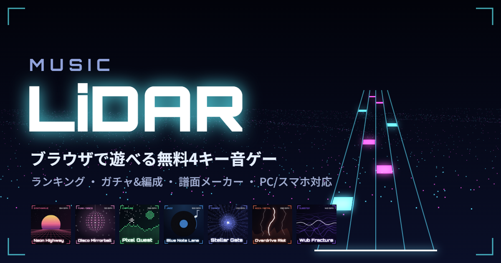

MUSICLiDAR

MUSIC LiDAR(ミュージック ライダー)は、ブラウザだけで遊べる無料の4キー音ゲーです。奥から手前へ流れてくるノーツを、判定ラインに重なったタイミングで叩きます。LiDAR(レーザーで周りを点群として測る技術)をイメージした、点群とネオンの世界観が特徴です。PC・スマホ・タブレットに対応し、アプリのインストールやアカウント登録なしですぐに遊べます。
左のレーンから D F J K キーで叩きます。速い連打は、隣のキー(S G H L)と2本の指で交互に押すと押し切れます(DとSが左のレーン、FとGが2番目、JとHが3番目、KとLが右のレーン)。キーは設定の「キー配置」で好きなキーに変えられます。選曲画面では ↑↓ で曲、←→ で難易度、Enter でプレイ。ゲーム中は Esc で一時停止、リザルト画面で R を押すとすぐにリトライできます。
画面を横に4分割したそれぞれのレーンをタップします。複数の指で同時押しもでき、指を横にスライドすると隣のレーンへ移れます。一時停止は左上の ❚❚ ボタンです。
判定は PERFECT・GREAT・GOOD・MISS の4段階で、スコアは100万点満点。ランクは MAX / S+ / S / AA / A / B / C / D です。MISSなしでクリアすると FULL COMBO、すべて PERFECT なら ALL PERFECT。FAST / SLOW 表示で早押し・遅押しの癖も分かります。
ハイスピード(ノーツの速さ)、BGM・タップ音の音量、レーン幅、判定ラインの位置、演出の強さ(オフ/控えめ/派手)を調整できます。
初心者向けのやさしい曲から、J-POP・アイドル・ファンク・サルサ・サンバ・中華風・アラビアン・ヒップホップ・メタルコア・タンゴ・ケルト・ワルツ・ブルース・和風・ユーロビート・レゲエ・トラップ・エレクトロスウィング・オーケストラ・スカパンク・ローファイ・シティポップ・ボサノバ・テクノ・フューチャーベース・ハードスタイル・ジャズ・ロック・トランス・ダブステップ・チップチューンなどいろいろなジャンル、BPM260までの鬼畜曲(最高Lv15)、譜面が止まったり加速したりするギミック曲まで。各曲 EASY / NORMAL / HARD の3難易度です。曲名をクリックすると、その曲を選んだ状態でゲームが開きます(曲ごとのURLは友だちへの共有にも使えます)。
| 曲名 | ジャンル | BPM | レベル(EASY / NORMAL / HARD) |
|---|---|---|---|
| First Light | 初心者向け | 90 | 1 / 2 / 4 / EX 5 |
| Hello, Lane | 初心者向け | 110 | 1 / 3 / 5 / EX 7 |
| Star Lullaby | オルゴール | 72 | 1 / 2 / 3 / EX 4 |
| Firefly Path | バラード | 80 | 1 / 2 / 3 / EX 4 |
| Cotton Candy | キッズポップ | 120 | 1 / 2 / 4 / EX 8 |
| Cherry Picnic | 春ポップ | 108 | 1 / 2 / 4 / EX 7 |
| Lemon Soda | 渋谷系 | 112 | 1 / 3 / 5 / EX 10 |
| Snow Globe | 冬・クリスマス | 96 | 1 / 2 / 4 / EX 7 |
| Bubble Bath | ラウンジ | 90 | 1 / 2 / 4 / EX 7 |
| Plaza 1995 | ヴェイパーウェイヴ | 78 | 1 / 2 / 4 / EX 5 |
| Sunny Parade | マーチ | 116 | 1 / 3 / 6 / EX 10 |
| Toy Box March | トイポップ | 124 | 1 / 4 / 6 / EX 10 |
| Sunflower Road | カントリー | 112 | 1 / 3 / 6 / EX 10 |
| Morning Coffee | アコースティック・ポップ | 100 | 1 / 3 / 5 / EX 7 |
| Starlit Camp | キャンプファイヤー | 92 | 1 / 3 / 4 / EX 7 |
| Puddle Jump | バウンスポップ | 116 | 1 / 3 / 5 / EX 8 |
| Piano Rain | ピアノ | 100 | 1 / 3 / 4 / EX 6 |
| Polar Night | アンビエント | 90 | 1 / 3 / 5 / EX 6 |
| Gospel Light | ゴスペル | 84 | 1 / 3 / 5 / EX 6 |
| Rainy Window | ローファイ・ヒップホップ | 82 | 1 / 3 / 5 / EX 6 |
| Lofi Library | ローファイ | 78 | 1 / 2 / 3 / EX 5 |
| Island Signal | レゲエ | 76 | 1 / 3 / 5 / EX 6 |
| Tropical Mango | トロピカルハウス | 108 | 2 / 4 / 6 / EX 9 |
| Neon Highway | シンセウェイヴ | 104 | 2 / 4 / 8 / EX 10 |
| Disco Mirrorball | ファンク・ディスコ | 118 | 2 / 4 / 9 / EX 10 |
| Dub Station | ダブ | 140 | 2 / 4 / 7 / EX 11 |
| Dembow Lights | レゲトン | 96 | 2 / 4 / 8 / EX 9 |
| Afro Sunrise | アフロビーツ | 104 | 2 / 4 / 8 / EX 10 |
| Midnight Jazz Cafe | ジャズ(バラード) | 120 | 2 / 4 / 7 / EX 8 |
| Space Waltz | ワルツ(3拍子) | 132 | 2 / 3 / 4 / EX 6 |
| Blues Highway | ブルース | 96 | 2 / 4 / 6 / EX 7 |
| Polka Party | ポルカ | 140 | 2 / 4 / 7 / EX 11 |
| Harvest Moon | フォーク | 104 | 2 / 4 / 6 / EX 8 |
| Velvet Night | R&B | 92 | 2 / 3 / 5 / EX 7 |
| Velvet Lounge | ネオソウル | 88 | 2 / 4 / 5 / EX 7 |
| Boom Bap Days | ヒップホップ | 90 | 2 / 3 / 5 / EX 6 |
| Sunset Bossa | ボサノバ | 128 | 2 / 5 / 7 / EX 11 |
| Deep Blue Current | ディープハウス | 122 | 2 / 5 / 8 / EX 11 |
| Tango Noir | タンゴ | 120 | 2 / 5 / 8 / EX 9 |
| Desert Wind | アラビアン | 110 | 2 / 4 / 8 / EX 11 |
| Samba Carnival | サンバ | 100 | 2 / 5 / 9 / EX 11 |
| Moombah Heat | ムーンバートン | 108 | 2 / 5 / 8 / EX 10 |
| Paper Planes | J-POP | 132 | 2 / 5 / 8 / EX 11 |
| Seoul Signal | K-POP | 128 | 2 / 5 / 8 / EX 11 |
| Koi Pond | 和ポップ | 118 | 2 / 5 / 8 / EX 11 |
| Retro Arcade | シンセポップ | 120 | 2 / 5 / 8 / EX 11 |
| Midnight Avenue | シティポップ | 112 | 2 / 5 / 9 / EX 11 |
| Funky Station | ファンク | 108 | 2 / 5 / 9 / EX 11 |
| Mariachi Sun | マリアッチ | 140 | 2 / 5 / 8 / EX 11 |
| Bollywood Beat | ボリウッド | 120 | 2 / 5 / 9 / EX 11 |
| Ocean Drive | ニューディスコ | 120 | 2 / 5 / 8 / EX 9 |
| Ascent | プログレッシブハウス | 126 | 2 / 5 / 9 / EX 11 |
| Dragon Gate | 中華風 | 128 | 2 / 5 / 10 / EX 12 |
| Cloud Point | チル | 100 | 2 / 5 / 8 / EX 9 |
| Pixel Quest | チップチューン(8bit) | 150 | 3 / 7 / 10 / EX 11 |
| Pulse Grid | ハウス | 126 | 3 / 6 / 9 / EX 11 |
| Swing Circuit | エレクトロスウィング | 124 | 3 / 5 / 8 / EX 9 |
| Low Orbit | トラップ | 140 | 3 / 6 / 11 / EX 12 |
| Iron Pulse | テクノ | 132 | 3 / 6 / 10 / EX 11 |
| Garage Shuffle | UKガラージ | 132 | 3 / 5 / 8 / EX 9 |
| Neon Boulevard | フューチャーファンク | 118 | 3 / 5 / 9 / EX 10 |
| Gamelan Moon | ガムラン | 120 | 3 / 5 / 8 / EX 10 |
| Thunder Road | サザンロック | 140 | 3 / 6 / 8 / EX 11 |
| Swing Kid | ビッグバンド | 168 | 3 / 6 / 8 / EX 10 |
| Sakura Lattice | 和風 | 140 | 3 / 6 / 10 / EX 11 |
| Last Horizon | オーケストラ | 120 | 3 / 6 / 9 / EX 10 |
| Celtic Run | ケルト | 132 | 3 / 6 / 8 / EX 10 |
| Big Room Blast | ビッグルーム | 128 | 3 / 6 / 10 / EX 11 |
| Glitch Garden | グリッチホップ | 110 | 3 / 5 / 8 / EX 9 |
| Salsa Fuego | サルサ | 180 | 2 / 6 / 10 / EX 12 |
| Blue Note Lane | ジャズ(スウィング) | 168 | 3 / 5 / 10 / EX 11 |
| Glitter Idol | アイドルポップ | 168 | 3 / 7 / 10 / EX 11 |
| Liquid Sky | リキッドファンク | 172 | 3 / 7 / 10 / EX 11 |
| Stellar Gate | トランス | 138 | 3 / 6 / 11 / EX 12 |
| Sky Prism | フューチャーベース | 150 | 3 / 7 / 11 / EX 12 |
| Synth Racer | アウトラン | 160 | 3 / 7 / 11 / EX 13 |
| Riddim Riot | リディム | 150 | 3 / 7 / 11 / EX 12 |
| Kawaii Bubble | カワイイ・フューチャーベース | 160 | 3 / 7 / 11 / EX 12 |
| LiDAR Rush | ドラムンベース | 174 | 4 / 7 / 11 / EX 13 / INF 14 |
| シャイニングスター(音楽:魔王魂) | ポップ | 158 | 3 / 6 / 8 / EX 10 / INF 12 |
| INMU KING(音楽:YAJU-MC) | ヒップホップ | 133 | 2 / 6 / 9 / EX 11 / INF 12 |
| 水の追憶(音楽:ああああ) | ピアノ・エレクトロニカ | 127 | 3 / 6 / 9 / EX 11 / INF 12 |
| Hydrangea | ELECTRO POP | 125 | 3 / 7 / 10 / EX 11 / INF 12 |
| 蒼 | VOCAL POP | 125 | 4 / 7 / 10 / EX 11 / INF 12 |
| SUMMER TRIANGLE(音楽:しゃろう) | ポップ | 175 | 4 / 8 / 11 / EX 12 / INF 14 |
| GHOST(音楽:かめりあ) | エレクトロニック | 220 | 2 / 8 / 13 / EX 14 / INF 15 |
| GHOST (2020 Halloween+++++++++ VIP)(音楽:かめりあ) | エレクトロニック | 230 | 3 / 9 / 14 / EX 15 / INF 16 |
| Crying Red(音楽:御箸ねくらぁ。) | チップチューン | 185 | 2 / 5 / 8 / EX 11 / INF 13 |
| blue rain | BGM | 83 | 1 / 4 / 7 / EX 8 / INF 10 |
| blue fire (前半) | BGM | 110 | 3 / 5 / 8 / EX 11 / INF 12 |
| myslee | BGM | 120 | 3 / 6 / 9 / EX 11 / INF 13 |
| no hand | BGM | 75 | 1 / 3 / 4 / EX 5 / INF 7 |
| anti natalism | BGM | 90 | 1 / 4 / 5 / EX 8 / INF 9 |
| special life | BGM | 100 | 2 / 4 / 6 / EX 8 / INF 10 |
| hand | BGM | 92 | 1 / 4 / 5 / EX 8 / INF 9 |
| last narration | BGM | 92 | 1 / 4 / 5 / EX 8 / INF 9 |
| curtain call | BGM | 125 | 3 / 4 / 8 / EX 11 / INF 12 |
| 暮らし泳ぐ(音楽:ナツメダ ユキ) | ボーカルポップ | 100 | 2 / 4 / 6 / EX 9 / INF 10 |
| 飛行白書(音楽:ナツメダ ユキ) | ボーカルポップ | 90 | 2 / 4 / 6 / EX 9 / INF 11 |
| 時間旅行 | VOCAL POP | 120 | 2 / 5 / 6 / EX 9 / INF 11 |
| 日々の映画 | VOCAL POP | 120 | 3 / 6 / 8 / EX 11 / INF 12 |
| 動きだす他人 | VOCAL POP | 90 | 2 / 3 / 5 / EX 8 / INF 10 |
| 標めいた、 | VOCAL POP | 90 | 2 / 4 / 7 / EX 10 / INF 11 |
| うつせみ | VOCAL POP | 80 | 2 / 4 / 6 / EX 8 / INF 10 |
| 雷と蜃気楼 | VOCAL POP | 90 | 2 / 4 / 6 / EX 9 / INF 10 |
| スノウスカイライン | VOCAL POP | 120 | 2 / 5 / 6 / EX 9 / INF 11 |
| 僕たちの旅とエピローグ。(音楽:ああああ) | BGM | 91 | 1 / 3 / 5 / EX 9 / INF 10 |
| A new world with form | BGM | 96 | 2 / 3 / 5 / EX 9 / INF 11 |
| Crown Of The Spire | BGM | 72 | 1 / 3 / 5 / EX 7 / INF 9 |
| Sanctilia | ORCHESTRAL | 140 | 2 / 4 / 7 / EX 9 / INF 11 |
| しう | VOCAL POP | 120 | 2 / 5 / 8 / EX 10 / INF 11 |
| ホワイトハッピー | VOCAL POP | 160 | 3 / 7 / 10 / EX 12 / INF 13 |
| ニャン | VOCAL POP | 120 | 3 / 6 / 9 / EX 11 / INF 12 |
| スーパーライフル☆ | VOCAL POP | 180 | 4 / 7 / 10 / EX 13 / INF 15 |
| そういう時に悪いインプットアウトプットしないで!! | VOCAL POP | 170 | 4 / 7 / 10 / EX 13 / INF 15 |
| じめときしふぇねちるあみん | VOCAL POP | 150 | 3 / 6 / 10 / EX 12 / INF 14 |
| Wub Fracture | ダブステップ | 140 | 3 / 6 / 10 / EX 11 |
| Offbeat Skater | スカパンク | 176 | 3 / 7 / 11 / EX 12 |
| Night Drift 95 | ユーロビート | 156 | 4 / 7 / 11 / EX 12 |
| Psy Forest | サイトランス | 145 | 4 / 7 / 11 / EX 13 |
| Neon Samurai | 和ロック | 165 | 4 / 7 / 12 / EX 13 |
| Brave Horizon | アニソン | 172 | 4 / 7 / 11 / EX 13 |
| Shamisen Storm | 津軽三味線ロック | 160 | 4 / 8 / 12 / EX 13 |
| Crystal Fortress | パワーメタル | 180 | 3 / 8 / 12 / EX 14 |
| Hyper Sakura | Jコア | 175 | 4 / 8 / 12 / EX 14 |
| Jungle Lights | ジャングル | 165 | 4 / 7 / 11 / EX 13 |
| Phonk Garage | フォンク | 150 | 4 / 7 / 10 / EX 11 |
| Overdrive Riot | ロック・メタル | 180 | 3 / 8 / 12 / EX 14 |
| Hard Reflector | ハードスタイル | 150 | 4 / 7 / 11 / EX 12 |
| Dark Shinobi | ダークシンセ | 140 | 4 / 7 / 11 / EX 13 |
| Bluegrass Rush | ブルーグラス | 180 | 4 / 8 / 12 / EX 14 |
| Crimson Rumba | フラメンコ | 124 | 3 / 6 / 10 / EX 12 |
| Jingle Circuit | クリスマスポップ(12/1〜1/31 期間限定) | 150 | 3 / 6 / 9 / EX 11 |
| Snowlight Carol | クリスマストランス(12/1〜1/31 期間限定) | 138 | 5 / 8 / 11 / EX 12 |
| Sweet Ribbon | CANDY POP(期間限定) | 128 | 2 / 5 / 8 / EX 11 |
| Sugar Rush Scan | ハッピーハードコア | 172 | 4 / 8 / 12 / EX 13 |
| Hyperpop Glitch | ハイパーポップ | 160 | 4 / 8 / 12 / EX 13 / INF 14 |
| Chip Dungeon | チップチューン | 180 | 3 / 8 / 12 / EX 13 / INF 15 |
| Circuit Breaker | ドラムンベース | 174 | 4 / 8 / 12 / EX 13 |
| Mirage Shift | ギミック(停止・変速・隠し) | 150 | 3 / 8 / 12 / EX 13 |
| Freeze Frame | ギミック(停止・変速・隠し) | 160 | 4 / 8 / 12 / EX 13 |
| Fractal Storm | ニューロファンク | 175 | 5 / 9 / 12 / EX 14 |
| Kick Machinegun | フレンチコア | 190 | 5 / 9 / 12 / EX 14 |
| Velocity Zero | トランスコア | 185 | 4 / 9 / 12 / EX 14 |
| Terminal Velocity | ジャンプアップ | 180 | 5 / 9 / 12 / EX 14 |
| Metalcore Fury | メタルコア | 200 | 4 / 9 / 13 / EX 14 / INF 15 |
| Time Twister | ギミック(変速・停止・隠し) | 170 | 4 / 9 / 13 / EX 14 / INF 15 |
| Clockwork Chaos | ギミック(秒針停止・巻き戻し・隠し) | 180 | 3 / 9 / 14 / EX 15 / INF 16 |
| Hyper Scan Breaker | ハイパーコア | 190 | 5 / 9 / 13 / EX 15 / INF 16 |
| Gabber Storm | ガバ | 200 | 4 / 10 / 13 / EX 14 / INF 15 |
| Final Protocol | ボス戦(停止・変速・隠し) | 200 | 4 / 9 / 13 / EX 14 / INF 15 |
| Abyss Gate | ハードコア | 200 | 5 / 10 / 13 / EX 14 / INF 15 |
| Bullet Hell 404 | チップチューン(弾幕STG) | 210 | 5 / 10 / 14 / EX 15 / INF 16 |
| Thunder Requiem | シンフォニックメタル | 195 | 5 / 10 / 13 / EX 15 / INF 16 |
| Jackhammer Jazz | ジャズフュージョン | 230 | 5 / 10 / 14 / EX 15 / INF 16 |
| Sakura Blizzard | 和風コア | 222 | 6 / 10 / 15 / EX 16 / INF 17 |
| Breakcore Collapse | ブレイクコア | 190 | 5 / 10 / 14 / EX 15 / INF 16 |
| Overclock Ω | スピードコア | 220 | 6 / 10 / 14 / EX 15 / INF 16 |
| Ultra Spiral | ギミック(らせん変速・停止・隠し) | 190 | 5 / 10 / 15 / EX 16 / INF 17 |
| Vertigo Scan | GIMMICK | 150 | 4 / 8 / 12 / EX 13 |
| Drift Lane | GIMMICK | 128 | 3 / 7 / 11 / EX 12 |
| Gravity Flip | GIMMICK | 140 | 4 / 8 / 12 / EX 13 |
| Spin Cycle | GIMMICK | 160 | 5 / 9 / 13 / EX 14 / INF 15 |
| Strobe Storm | GIMMICK | 174 | 5 / 10 / 14 / EX 15 / INF 16 |
| Quantum Leap | ギミック(停止・変速・隠し) | 200 | 4 / 10 / 15 / EX 16 / INF 17 |
| Lightspeed Flash | フラッシュコア | 230 | 5 / 11 / 14 / EX 15 / INF 16 |
| Event Horizon | テラーコア | 230 | 5 / 11 / 15 / EX 16 / INF 17 |
| Omega Requiem | オーケストラコア | 210 | 5 / 11 / 14 / EX 15 / INF 16 |
| Neutron Overdrive | スピードコア | 240 | 5 / 11 / 15 / EX 16 / INF 17 |
| Infinity Breaker | スピードコア(最難関) | 260 | 6 / 12 / 15 / EX 16 / INF 17 |
手持ちの音声ファイル(mp3・wav・oggなど)をドラッグ&ドロップすると、曲を解析して自動で譜面を作って遊ぶこともできます。
難易度・テンポ・ジャンル別の曲のまとめもあります(初心者向け ・ 鬼畜曲 ・ BPM180以上 ・ 和風 ・ ジャズ ・ EDM ・ コア系)。
内蔵曲は曲・難易度ごとにオンラインランキングがあります。ランキングには、キャラの編成効果を含まない「素のスコア」が登録されるので、純粋な腕前で競えます。
名前とパスワードでアカウントを作ると、データがサーバーに保存され、別の端末からも続きを遊べます。
ブラウザ上で譜面を作れるエディタを搭載しています。
内蔵曲の譜面は「みんなの譜面」に投稿でき、他のプレイヤーが遊んだり、いいねしたりできます。譜面ごとのランキングもあります。
すべて無料です。課金要素はありません。ガチャもゲーム内のコインだけで引けます。
Bluetoothイヤホンは遅延が大きいことがあります。有線イヤホンやスピーカーで試してみてください。iPhoneはマナーモードだと音が出ないことがあります。
ログインしない場合は端末のブラウザに、ログインした場合はサーバーに保存されます。